人生感悟
道德 道理
道-- 无始无终先作形声真主宰。
德--宣仁 宣义聿昭拯济大权衡。
万有真原
圆
在广阔无迹的宙宇间，众生对月光总有一种神奇的向往。
翻开世间的各大经典，都可以查到月光带有神灵的启示。
月 光
圆月不只是在南海上的月亮才圆
明月也不是只在黑天的时候才明
星月在永恒之光的作用下才明亮
明亮
在迷人的月色之中
梦中情人相依相偎
海誓山盟吐露真情
在启迪的月光之下
意会光尘与尔和同
心光交融月光明亮
道家之士，自然无为，就是 月光
天主教者，圣母之心，就是 月光
清真教徒，真主教悔，就是月光
佛教佛法，平常之心，就是月光
愿用其光，复归其明，和谐玄同
愿使此情，奉献与爱，善良守中
慧眼
一根镇海针！一颗火红心！ 珍珠镶日月！明圆你我心！
老 君炼火炉！火眼成金睛！ 望君多磨难！日久见真心！
海 底针
海底针、海底针，尖锋无 刃；
海底针、海底针，奇正在 身；
海底针、海底针，动静之 神；
海底针、海底针，棉里藏 针；
海底针、海底针，守中深 沉；
海底针、海底针，收之于 心；
什 么是海？海是宽容！什么是底？底是情怀！
什么是针？针指真心
感 触
闻 之悠然心慰，问之奇缘相会。 触之感叹乾坤，望之不见首尾。
圆融` 朴真 ` 无为
大鹏展翅长空寂，俯撼天地本物齐。有起有落本怀双，无穷无富只抱一。
有虑有他有凡恨，无念无我无圣喜。世事如风随鼓荡，人生似云任卷舒。
微明 奉爱 诚信
穷象不可宏清，至明好似微 尘；
贪欲只因妙理，奉爱是为精 深；
下狱回首渊窗，上天去返玄 门；
孤魂迷拜八仙，静心不求百 神。
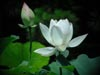
不染
莲妙根深水秀清 风吹草动花不倾
净 心观望沉浮景 流水不腐是人情
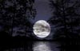
仰观俯察 明 平衡思索 道
观 天道理透, 懂日月谓明； 常年祸富生, 每日阴阳行；
规矩本有法, 方圆自然成； 获理问良师, 得道求自冥。
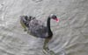
黑天鹅
天上不见白云，地下小湖如 墨。
水中觅食天鹅，岸边摄取春 色。
众生为何而生，天地为谁而 活。
上善若水不言，你我细心琢 磨。
真假 成败 返
一阴反一阳，全在里中藏。 虚实鬼难解，假真人易伤。
今吃一大欠，明获两小智。 内观常反思，复归与微茫。
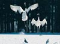
休养与修养
会休养的人，敬日月，知寒暖。总能把握住适可而 止，因能长命百岁！
有修养的人，知何生，明何死。追求与大自然的感 应，自呼万寿无疆！
天地神得一
心 领神会，来之不易；变与不变，看穿假真。
虚 心上进，抱一内敛；天地谐和，秀水清山。
正与静 清与明
.山清秀流水晶莹， 人康健血液畅行。
国正天心才致顺， 官清民自能安平。
上梁不正下梁歪， 梯子不稳上易倾。
人道天道自然道， 抱一宁清无为明。
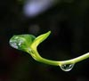
无 为的仙人掌
仙人掌啊，仙人掌，你不会隐 藏、、、、、、、、、、
仙人掌啊，仙人掌，你为什么这样长、、、、、、、、
仙人掌 啊，仙人掌，别人看着你长、、、、、、、、、
仙人掌啊，仙人掌，你只会听，不会 讲、、、、、、、
在晴天之下，人们爱观赏你，而不愿意拥抱你仙人掌！
在夜幕之下，人们经常怕你，而不愿意理睬你仙人掌！
在忙乱之下，动者常碰到你，静者常念想著你仙人掌！
在旱季之下，不怕风吹日晒，唯有你鲜花怒放仙人掌！
在疯狂之下，虽被斩草除根，你确能茁壮成长仙人掌！
我爱我心中无为的仙掌，因为它比我还要强壮和自强！
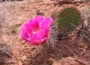
沉默
无需赞美道， 因为我知道，硬要赞美道， 因为不知道。

浩气与道气
胸中存浩气，笔底见雄锋！
心中存道气，下笔如有神！
风帆
清晨一轮红日正从东方升起；
霞光万道照亮了沉寂的海域。
老子的“为无为帆”乘风破浪；
漫载着对人世间的深情厚意。
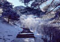
先人体悟
虽有智慧不如乘势；虽有磁基不如待时。
人生本是苦海，以苦为乐；
命运无可反抗，与天同乐。
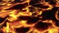
天地无情
火山无意爆发，冰雪随之熔化，
鸿鹤有心再踏，落地魂飞无家。
人间有意
老幼祥和情意，奉爱缘陪灵犀。
共望同心同明，但愿岁月不移。
大 道无为
人间阴阳巧变，万世甘苦后前。
无 为自然一时，光照无心瞬间。
道为何物？
何为物小？ 针扎不到！
何为纯净？ 看不到纯！
玄中有物物，物中有玄玄！
道为何物？我问苍天 ，天不语！
为 无为
吃喝玩乐人生 短，适可而止能成圆。 道法自有为无为，只求三笔大自然。
宁 静求祥和，生活求所得。
宁静不见三节 形，致远见形不为能，
有为无为为无 为，节节贯串里中行。
人生无求非平 凡，生活有趣才意浓，
如能为己又为 公，才是人间好英雄。
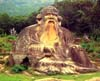
有家与无家
嫡系传人有 家，近水楼台得月。
.道见其道为 光，德见其德为明。
雾散三潭映 月，云聚九龙采雨。
.滴水入海常 事，流入渊源永恒。
.上天入海无 家，龙腾自行自由。
.护照东来不 用，海关西去没有。
.道德方圆常 变，人生吐呐求和。?
.融道有窍有 妙，悟道无为无求。
~ 白鹤亮翅~欲往玄门~
乾坤五方天涯 芳草，南北十面海角云霄。
游子间歇无意 何方，白鹤静守众门之妙。
中气虚领臂膀 随身，灵心一静亮翅由神。
前虚后实上开 下合，真气鼓荡欲往玄门。
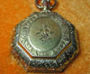
金怀表
出土文物一 金，怀中表芯已朽。
人走物留永 远，时光往行不休。
先贤智慧展 现，今人嫡传手功。
精雕细刻小 心，妙手回春大修。
此物来之不 易，复归原样更难。
四处奔走不 息，盼望破镜重圆。
天公作美相 助，人物有缘相伴。
老表生机重 返，怀古时光倒转。
亭月伴古枝
参天古树喜圆融， 阴晴圆缺守中冲，
亭檐幽陪千岁枝，月下静观万年情。
古木之心似人 情，春夏秋冬情意 浓，
凤亭爱晚又 欢晓，上智喜伴月夜星。
闻箫起舞枝 头月，听风飞檐晚亭明，
风吹雨打何所 惧，日月常存伴我行。
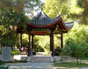
午 日梦凉亭
梦中漫步陶然 亭，当空烈日不留情。
感谢先人做善 事，百亭荫凉任我行。
醒来方知是一 梦，身在屋中似凉亭。
空室空无实 有用，空净心态享万生。
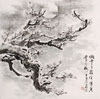
幽梅凉雪
梅花得意占群芳,雪后追寻笑我忙,
折取一技迎风雪,扫开残雪种梅香.
红梅幽香飞雪傲,空世绝伦情谊长,
天矫独立饮风月,梅舞雪瞩天显光.
听琴音醉灵谷静,空我心神寻旧音,
昔日梅落飞雪散,今朝它乡舞霜枝.
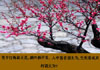
咏梅
梅花欢喜漫天雪，松竹宁静更逼真，
夏日餐肴别旧友，岁寒一晃二十年。
有梅无雪失精神，有雪无梅怀故人，
天公做媒天又雪，与梅沉浮度九春。
宝剑锋从磨砺出，梅花香自苦寒来，
问花可怀临别语，心心常似过桥时。
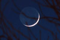
新月
悲欢离合不了情，何必把心伤。
无常世界心平坦，海角天涯无处起风 浪。
新月当空十月秋，备酒陪佳人。
静等伊人天仙客，两岸共赏天涯明月 圆。
中秋与兄会
禅定天际慧双龙，佛道圆融法无边
握手言和光明下，清净无为一心团
圆明牵挂尘光绪，月光思念万道源
道乃正大光明处，抱一畅游呼吸间
无为无不为
无为之心酒后言，有为话题已千年，
清静无为生活中，放会无为任自然，
损之又损辱又辱，千锤百炼大师出。
长生
盲人未曾见月星，何知遥夜真光明?
人间时针轮回转，超越生死永长兴。
受苦受难的人！
在人性恍惚的世界里，天灾人祸是人知常情，
请相信黑暗痛苦的后面，总是一片曙光！
请不要慌张，大道常跟我们开玩笑，
她有时让我们惆怅；她有时使我们疯狂；
她即给了我们仇恨；也同时给了我们善良！
我们要相信人间怨恨不常有，而大爱常存！
请看看，此刻有多少人把我们关望。
大隐大道的爱，天地无情的有情！
在我们感到生活安康的时候，是她在梦中把我们吵醒，
并扒开我们带有睡意的眼皮，
让我们亲眼看到这个痛苦的世界，真魔鬼的模样！
同时在我们痛苦失意的时候，是无形的大道，
在背后给了我们巨大的生存力量！
痛苦中的人啊，时间将会洗去你们的痛苦。
请相信天地有不可估量的大爱、大仁！
这个大仁！是因为她让我们明白，什么是真正的天地不仁！
让我们从大道中，寻找永久的安慰吧！
寻无为~~
无为为何称无为？无为之前为何为？
如今想去为无为，反问自己知无为？
静无为~
起念无为晓道为，寻求之境法有为，
天地人和无为唤，远离红尘伴无为。
动无为~
乘势而为不过极，身居闹市待良机，
命运无常记心间，和来逆顺二龙戏。
为无为
宁静致远通无为，同尘和光道无为，
自然无为我无为，顺其自然为无为。
自 问：
自悟不理五行，交流不必拳脚.
长进不靠武功，明道不靠诚信.
既然已知道自然，为何强求悟大道?
一 日 即景
海风轻吹树枝摇，幽灵伴我练体操
心静体松四肢顺，恍惚一念洗心潮
此念让我心陶然，笑意写在我脸面
若问此念是何物，天地人和心坦然
~和光同尘~
如果我们来自那个光团，我们就是尘光，
和光同尘，循环往复，万物茁壮成长。
既然从未死亡，为何再谈永生永世？
永生永世，你我从未死亡。
既然悟出万物来自大爆炸，为何不悟谁是引爆的 人？
既然我们能悟道，难道我们也是创始人？！
创始人？ 创始人？ 真神！真神！！ 道真神，和光同尘.
清晨，我们迎着晨光，带着浮尘, 开始 一天的繁忙。
夜静，尘浮伴我们入睡，电光为我们照明。
入土，升天，星光为我们而送行，大地是我 们的陪葬。
和光同尘，大道运作，妙窍玄观，我又再显。
亲爱的朋友呀！当我们高傲的时候，是因为我们 忘记尘光；
当我们寂寞悲伤的时候，也是因为我们忘记哪尘 光。
亲爱的朋友呀！你可知银河系哪边的天使也把你 想，
你想飞往的天堂，是哪天使也想你的地方，
天使的天堂就在这方你脚踏的地上。
当我们为想入天堂而发愁的时候，是因为我们忘记了我们已在天堂上望 天堂。
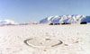
为妙自然?
观返先贤苍天妙，人中神运不长眠；
自然清净上智伴，寒风不侵心丹暖；
无意燃生有情焰，日月同辉浴洁身；
通见善性心田润， 常用平和度关山。